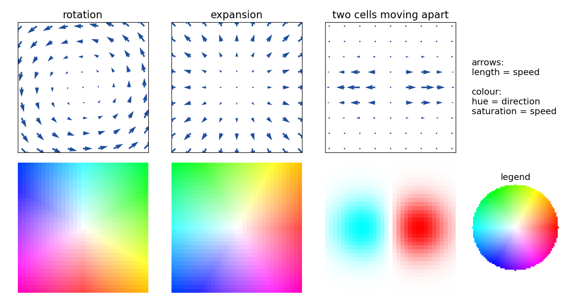
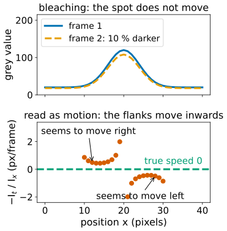
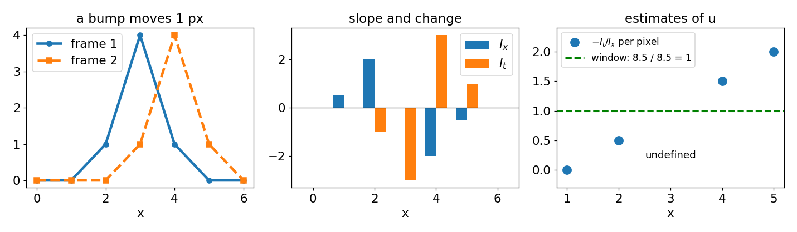
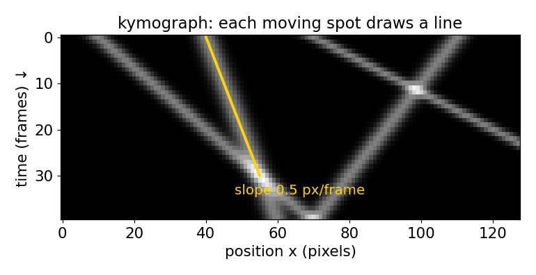
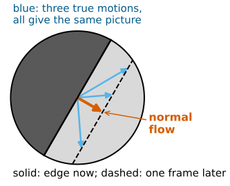
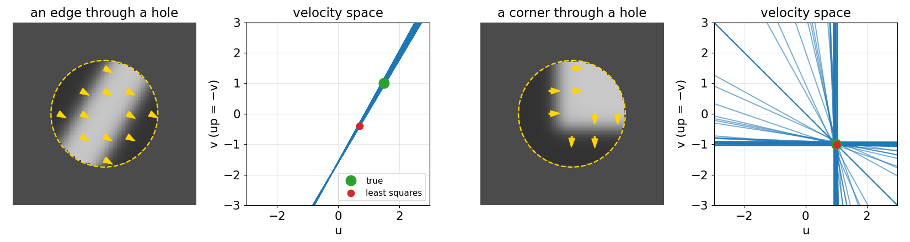

Motion between frames: brightness constancy and the aperture problem
Image analysis
About this lecture
FFT registration found one shift for a whole image. Cells crawl, tissues fold, cytoplasm streams: every part moves differently. Today: give every pixel its own motion vector.
A flow field and how to read it (arrows, the colour wheel).
Brightness constancy: a moving point keeps its grey value, and when biology breaks it.
1D first: speed = −(change in time) / (slope), and why a window of pixels helps.
Kymographs: motion as the slope of a line in an x–t image.
The aperture problem: along an edge only the motion across the edge can be seen.
Slides titled The math give the formulas and proofs; the ideas are complete without them.
FFT registration and stitching found the single translation that best aligns two images: one peak in the correlation surface.
That is the right model for stage drift or tiles of a mosaic. It is the wrong model when
a cell migrates while its neighbours stay put,
an embryo’s tissue converges in one place and spreads in another,
cytoplasm streams in a loop.
Now every pixel gets its own vector: where did the content of this pixel go between frame 1 and frame 2? That field of vectors is the optical flow.
Showing a flow field

Arrows on a coarse grid: length = speed. Easy to read, but only a few hundred fit.
Colour wheel: hue = direction (red = right, counter-clockwise round the wheel), saturation = speed, white = still. Every pixel shown.
Saturation is relative to the largest speed shown: always state the scale (“edge of the wheel = 2 px/frame”).
Try it: reading flow fields
Brightness constancy
The one assumption that links images to motion: a moving point keeps its grey value.
If the content at (x, y) in frame 1 moves by (u, v), then frame 2 at (x + u, y + v) shows the same value.
It holds when illumination is fixed, the sample stays in focus and the frame interval is short. It fails when
the dye bleaches (everything gets darker every frame),
fluorophores blink, or objects enter or leave the focal plane,
a 3D object rotates and its shading changes, or the illumination flickers.
Where it fails, every method of this day reports motion that is not there (or misses motion that is).

1D first: a profile that moves

A profile moves right by u pixels per frame. At a pixel on a slope I_x, the value changes by I_t \approx -I_x\,u from frame 1 to frame 2, so u = -\,I_t / I_x .
On the slope: works. On a flat stretch (I_x = 0): no information. At the peak: none either.
Pixels disagree (0.5, undefined, 1.5 above). Combine a window by least squares: u = -\sum I_x I_t / \sum I_x^2 = 8.5/8.5 = 1, exactly right.
The math: the optical flow constraint
Brightness constancy: I(x + u\,\delta t,\; y + v\,\delta t,\; t + \delta t) = I(x, y, t).
First-order Taylor expansion of the left side: I + I_x u\,\delta t + I_y v\,\delta t + I_t\,\delta t + O(\delta t^2) = I \quad\Rightarrow\quad I_x u + I_y v + I_t = 0, i.e. \nabla I \cdot (u, v) = -I_t (with \delta t = one frame).
Valid while the motion is small compared with the distance over which the gradient changes (the neglected term involves the second derivatives times u^2). Large motion: the next unit.
In 1D: u = -I_t / I_x. Over a window, least squares minimises \sum (I_x u + I_t)^2; setting the derivative 2\sum I_x(I_x u + I_t) to zero gives u = -\sum I_x I_t / \sum I_x^2.
Kymographs: motion as a slope

Stack the profile of every frame under the previous one: an x–t image. A moving feature draws a line; its slope (pixels per frame) is its speed.
Steeper away from vertical = faster; vertical = still; crossing lines = features passing each other; a curved line = acceleration.
Biology: vesicles moving along an axon, a cell edge protruding and retracting.
1D flow is the orientation of the lines in this image: the structure tensor measures it, now in x–t instead of x–y.
Try it: speed from slope and change
The aperture problem
In 2D, each pixel gives one equation for two unknowns (u, v).
Look at a straight edge through a small hole: you see it move across itself, never along itself. The motion along the edge changes nothing you can see.
What a single pixel (or a straight edge) can measure is the normal flow: the component of the motion along the gradient.
The barber pole: stripes seen through a tall slit seem to move up, whatever their true motion.
A corner or a texture has gradients in several directions: that resolves it.

Constraint lines in velocity space

Draw velocity space, u across and v (down) up the page. Every velocity that would explain one pixel’s change lies on a line in this space.
An edge: all its pixels give the same line. The truth is somewhere on it; the point closest to the origin is the normal flow.
A corner: two families of lines cross at the true velocity.
A flat patch: no line at all.
The math: the constraint line
For one pixel, \{(u, v) : I_x u + I_y v = -I_t\} is a line with normal \nabla I.
Its distance from the origin is |I_t| / |\nabla I|; its closest point is the normal flow\mathbf u_\perp = -\,\frac{I_t}{|\nabla I|^2}\,\nabla I .
Two pixels: the 2\times2 system \begin{pmatrix} I_{x,1} & I_{y,1}\\ I_{x,2} & I_{y,2}\end{pmatrix}\begin{pmatrix}u\\v\end{pmatrix} = -\begin{pmatrix}I_{t,1}\\I_{t,2}\end{pmatrix} has a unique solution iff the determinant is not zero: iff the two gradients are not parallel.
Example: (I_x, I_y, I_t) = (1, 0, -2) and (0, 1, -1): the lines u = 2 and v = 1 meet at (2, 1).
The aperture problem is rank deficiency: all gradients parallel, rank 1.
Try it: the aperture
Where the next units go
One equation per pixel is not enough. Two ways to add information:
a vector where the window has texture, plus a confidence
a vector everywhere (fills in flat regions)
Both rely on brightness constancy and on small motion.
Summary
A flow field gives each pixel a vector: where its content went. Show it with arrows or the colour wheel (hue = direction, saturation = speed, scale stated).
Brightness constancy: a moving point keeps its grey value; bleaching, blinking, focus changes and shading break it.
In 1D, speed = −(change in time)/(slope); single pixels are unreliable, a window combined by least squares is not.
A kymograph turns motion into the slope of lines.
The aperture problem: an edge shows only the motion across it. Each pixel’s constraint is a line in velocity space; edges with different directions (corners, texture) make the lines cross at the true motion.